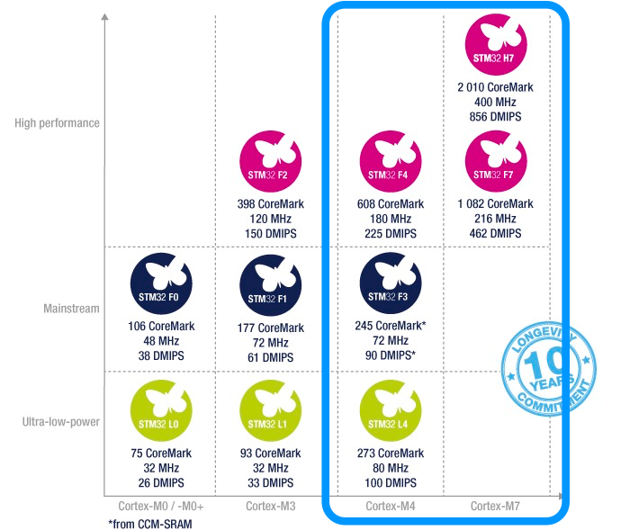
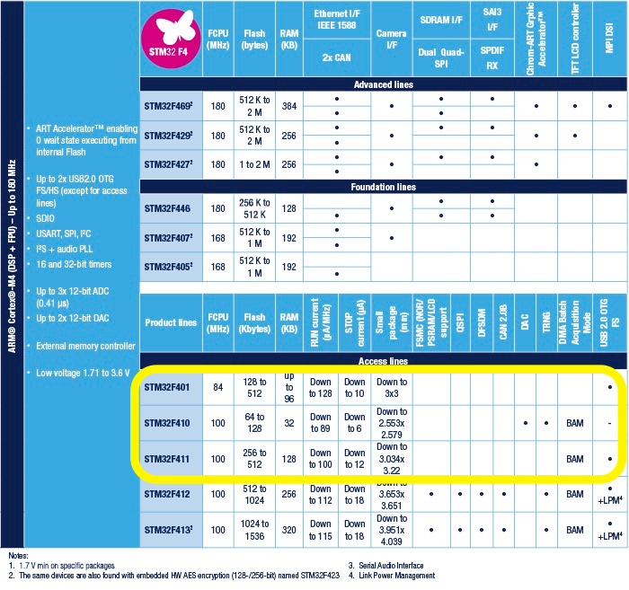

初出場の2016年九州地区大会では完走できなかった．今年は初号機を調整して完走を目指すと同時に，もっと速いマウスの製作にも挑戦したい．DCマウスも作ってみたいが，まだ完走も出来ていないので，今年も基本に忠実にステッパーでいこうと思う．
今年は新しいスキルを身につけるために，以下のことにチャレンジしたい．
- 3D CADを使って機体を設計する．
- KiCadを使って基板を設計する．
- 新しいMPUを採用する．
- マウスのコントロールを物理量ベースで行う．
3D CADの選定
フリーのCADで評判が良いのは，Fusion360やDesignSpark Mechanicalだ．しかし，多少使いづらかったり機能面で劣っていても，未来永劫フリーで何の縛りもない方が性に合うので，FreeCADに決まり．
基板CAD
昨年はEagleを使って基板を製作した．随分多くのパーツを自分で作って登録したので愛着もあるが，今後長く使っていくならやはり何の縛りもないフリーのCADに早めに乗り換えた方が良いと考え，今年はKiCadを一から勉強し直そうと思う．
MPUの選定
昨年はNXPのLPC1114を使用した．プロトタイプ製作ではDIPパッケージを使い，基板に実装する際はLPC1114FDH28/102（TSSOP 28pin）を使い，とても便利だった．しかしFPUがないため，浮動小数点の計算が続くとマシンの動きがギクシャクした．今年は昨年よりも速いステッピングモーターを使いたいので，FPUが付いたMPUにしたい．また色々なセンサを追加できるように，最低8つのADチャンネルは欲しい．PSoCも魅力的だが現時点でFPU付きのモデルが発売されていないので残念ながら今回は見送り．
色々と物色した結果，ARMコアの中で入手の容易性と手頃な値段からSTMのMPUに乗り換えることにした．FPU付きだとARM Coretex M4以上となるので，STM32F4，STM32F3，STM32L4あたりから選ぶのが妥当だろう．

上位シリーズのSTM32F4ならSTM32F4Discovery評価ボードが秋月 で2,800円で買える．まずはこの評価ボードを使ってSTM32コアの使い方を学ぼうと思う．この評価ボードに載っている STM32F407VGT6 （RSオンラインで1,489円）は，Ethernetコントローラーまで付いていてオーバースペックなので，実際に使用するのは以下の中のどれかとなるだろう．大きさは64pinのLQFPパッケージとする予定だ．
